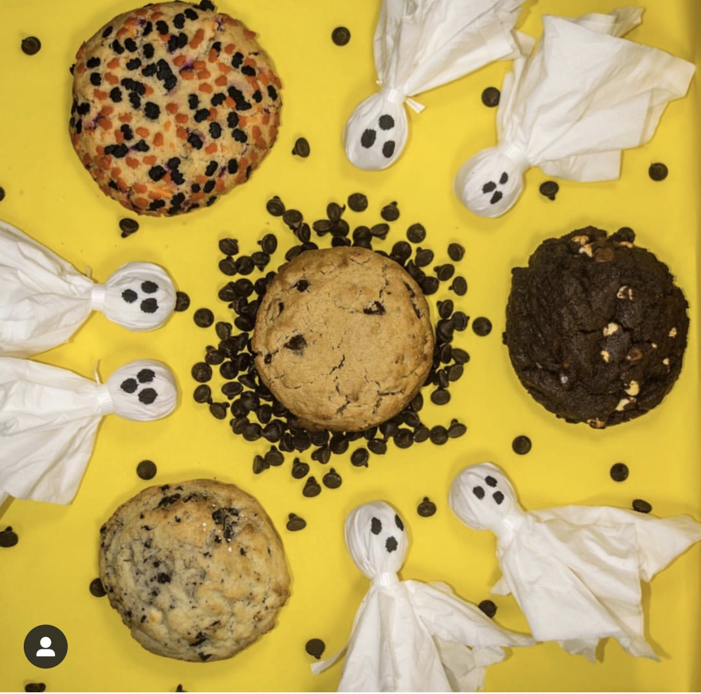
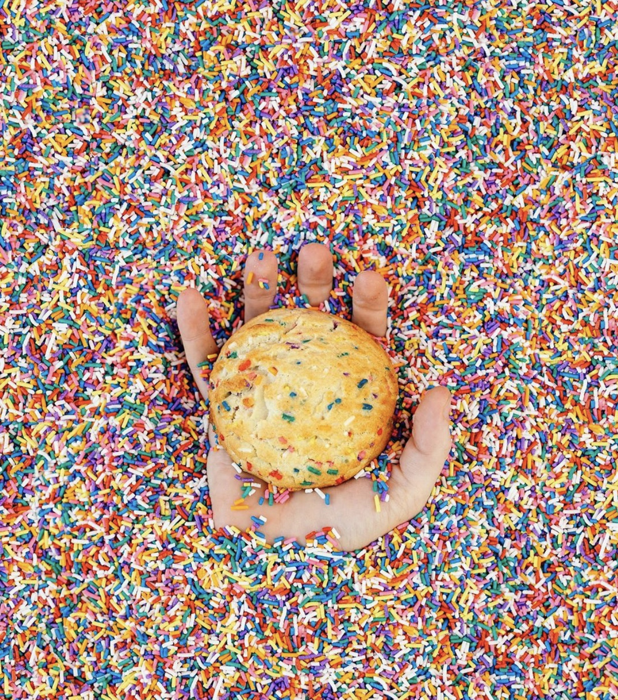
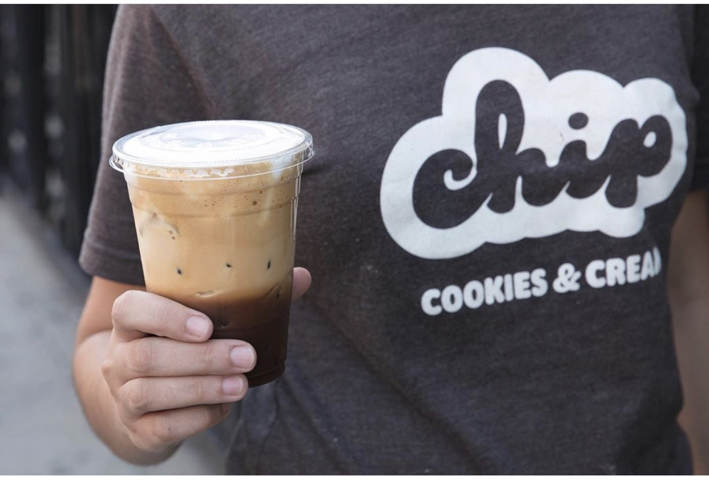
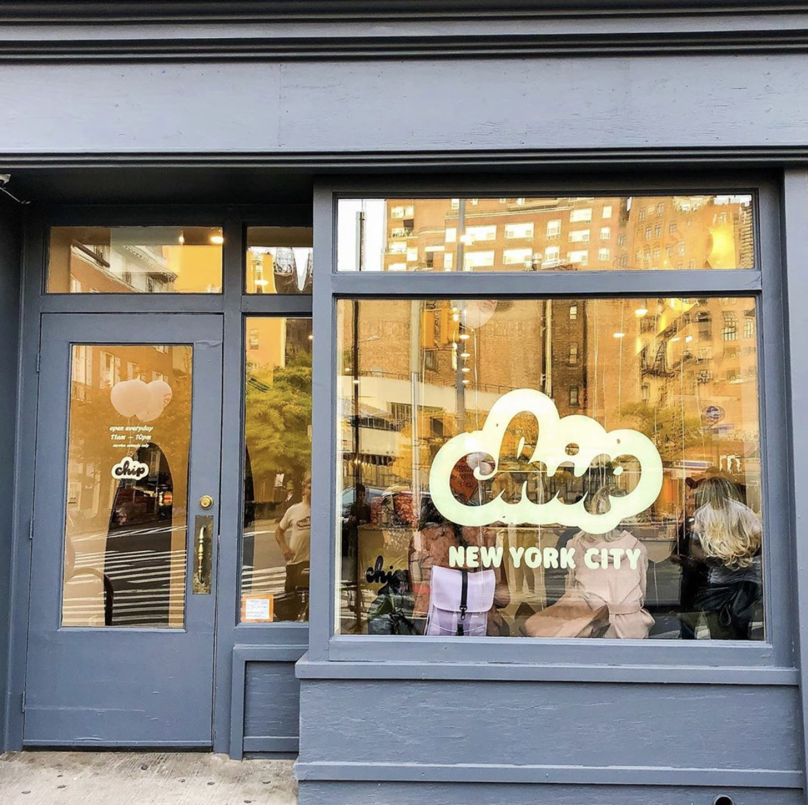
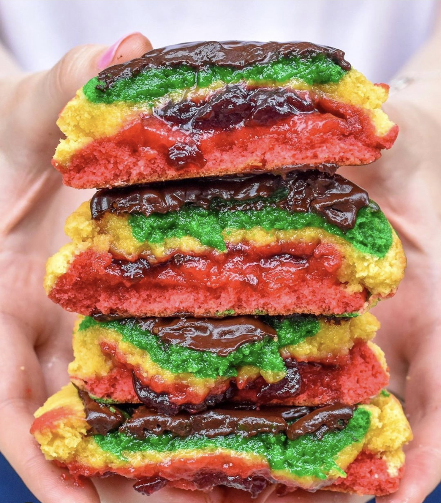

Welcome! Let's talk about the best and biggest cookies in NYC from Chip New York City! The Chip Instagram account includes beautiful and detailed photos of their cookies that will make your mouth water. They also use their Instagram to talk to costumers and fans about upcoming events and changes to their business and of course release their new seasonal flavors!
 Instagram Caption: up boo⁉️👻 You coming to the Chip West Village Grand Opening TOMORROW (Friday) 5pm at 📍 298 Bleecker Street NYC 🙌 Original Photo
 Instagram Caption: More sprinkles? Ok, tell me when to stop 😜 | 📸: @thebrothersbuoy Original Photo
Instagram Caption:It’s always Freddo Cappuccino season 💯 Grab a Chip iced or hot Coffee & Cappuccino at our 30th ave & LIC locations 💯☕️ Original Photo
Instagram Caption: Chip West Village is NOW OPEN!! 📍 298 Bleecker Street NYC 🙌🍪 Open 11am - 10pm ⏰ 7 days a week ‼️ We look forward to serving Manhattan and the entire NYC community 🧡 Original Photo
Instagram Caption: Rainbow Cookie is on the menu baaack to back 🌈🍪🙌 Today & Friday, visit any Chip location to try our version of the Tri-Color Italian classic 🍪🇮🇹 *limit 2 per customer* Original Photo